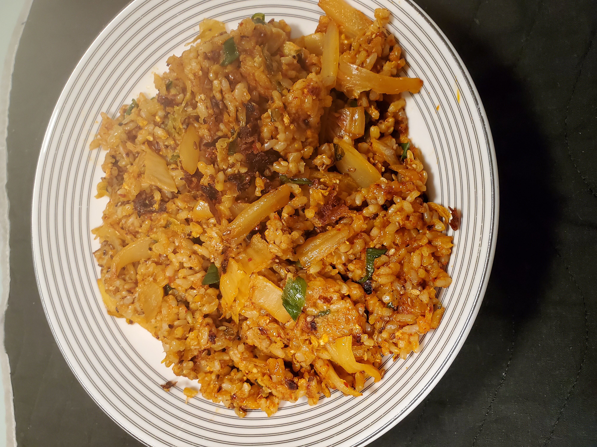

김치볶음밥 (Kimchi Fried Rice)

Description
김치볶음밥 (Kimchi Fried Rice) is the perfect dish to make with over-ripened kimchi or leftover rice. Many different types of vegetables or meats can be added to suit personal preference.
This popular dish is easy to make and requires minimal ingredients.
The following is a simple bare-bones version which can be modified to suit taste.
Ingredients
- 3/4 cup Cut Kimchi
- 2-1/2 cup Cooked Rice
- 1 Egg
- 1 Tbsp. Oil For Frying
- 2 tsp. 참기름 (Sesame Oil) (optional)
- 1 tsp. Sesame Seeds (optional)
- 1 Chopped Scallion (optional)
Steps
- Heat cooking oil in pan over medium high heat.
- Add kimchi to heated pan. Stir-fry until kimchi lightly golden brown.
- Add rice and egg to kimchi pan. Stir everything well until properly mixed.
- Lower heat to medium low and continue to stir frequently to avoid rice sticking to pan.
- Serve once rice reaches preferred moisture.
- (optional) Top with 참기름 (Sesame Oil), Sesame Seeds, and Scallion.